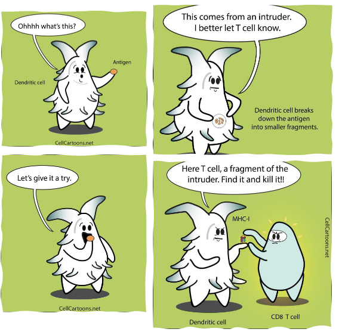
2 Innate Immune System
2.1 Overview of the Innate Immune System
2.1.1 Avoidance Strategy
“The immune system is like the military that protects your body, or your homeland, against invaders and prevents invaders, such as viruses and bacteria, from coming in, taking over and trying to take down your homeland.”
– Dr. Tory Torgerson
Our body has a super cool defense team called the innate immune system. Think of it like a superhero squad that works 24/7 to keep us safe from harmful invaders like bacteria and viruses. One way they do this is by using an “avoidance strategy.”
Imagine our body as a fortress, and the innate immune system builds strong walls and sets up barriers to keep out the bad guys. These barriers are like shields, and they’re found in places like our skin, mouth, respiratory system (which includes our lungs), and intestines. The goal is to stop these invaders from getting inside and causing trouble.
These barriers aren’t just walls; they also have special agents, like antimicrobial proteins, that act like secret weapons. These proteins are like the guards of the fortress, patrolling and making sure no invaders sneak in. So, not only do the barriers physically block the way, but they also have backup plans to strengthen the defense even more.
2.1.2 Resistance Strategy
Now, let’s talk about the second part of our immune system’s strategy – the resistance strategy. Imagine this as the superhero squad going into action when some invaders manage to sneak past the initial barriers.
Once these bad guys get inside our fortress (our body), the innate immune system switches to a resistance strategy. The goal here is to reduce or eliminate these troublemakers – kind of like fighting off the enemy inside the castle.
The superhero cells in our body, activated by the innate immune system, have two main ways of dealing with the invaders. First, they can directly attack and destroy the bad guys. This might involve swallowing them up or releasing special chemicals that are like toxic weapons against the invaders.
The second way is to send signals to other immune cells, kind of like calling for backup. These backup cells then join the fight and help in getting rid of the invaders. It’s like a teamwork strategy, where different immune cells work together to make sure the invaders are taken down.
2.1.3 Adaptive Immune Response (in a nutshell)
Now, let’s dive into the next level of our immune system – the adaptive immune response. Think of B and T cells as the special forces, the elite units of our immune system. These cells are like highly trained commandos that launch specific and targeted attacks against invaders.
What makes B and T cells so cool is their ability to remember their enemies. It’s like having a superhero memory for future assaults. Once these cells encounter a specific invader, they learn all about it and keep that information stored for a long time. So, if the same invader tries to attack again, our immune system can recognize it quickly and launch a swift and powerful counterattack.
These special forces are amazing at eliminating pathogens that might have slipped past the initial defenses or overwhelmed the innate immune system. They are super specific, meaning each B or T cell is trained to recognize and attack a particular invader. It’s like having a specialized team for every type of enemy.
However, there’s a catch – these special forces take some time to gear up. Unlike the innate immune response that acts quickly, the adaptive immune response is a bit slow to develop. It takes a few days for B and T cells to get ready for action. But once they’re in the game, they provide a strong and targeted defense, and they remember their enemies for future showdowns. It’s like having a personalized army ready to protect us with precision!
2.1.4 Traits of the Innate Immune System
The innate immune response is like the body’s quick and tough bouncer at the entrance of a club, keeping out unwanted party crashers.
First Line of Defense: Think of it as the first layer of protection, always on guard to stop invaders (like germs) from getting in.
Rapid Response: This defense team acts super fast, within minutes of spotting a threat. It’s like having an emergency response team that jumps into action right away.
Quick Elimination: The innate immune response aims to kick out invaders ASAP or at least keep them in check until the big guns (adaptive immune response) arrive. It’s all about buying time to get things under control.
Non-Specific: Unlike the adaptive immune response, which is like a specialized SWAT team, the innate response isn’t picky. It recognizes common signs of trouble but doesn’t pinpoint specific enemies.
Limited Repertoire: Picture it having a set of basic tools. The innate system uses pattern recognition to identify general danger signs caused by invaders, like a detective recognizing a criminal’s usual tactics.
Activating Backup: When the situation gets too intense, the innate response signals the adaptive immune response, kind of like calling in reinforcements. Teamwork makes the dream work!
2.2 Pattern Recognition by Innate Immune Cells
Imagine our immune cells as smart detectives always on the lookout for trouble. They use special tools called Pattern Recognition Receptors (PRRs) to identify the bad guys. These PRRs are like the detective’s keen senses, strategically placed in two main locations:
On the Cell Surface: Think of this as the outer radar system, scanning for trouble outside the cells. It helps in spotting invaders that are trying to attack from the extracellular (outside the cell) space.
Inside the Cell (Endosomes/Cytoplasm): Now, picture an inner security system. This part detects invaders that manage to sneak inside the cell, keeping an eye on potential threats within.
These PRRs are like a smart filter looking for specific patterns called Pathogen-Associated Molecular Patterns (PAMPs). PAMPs are like the bad guy’s signature moves – regular patterns found on many invaders but not on our own cells. It’s a way for our immune system to shout, “Hey, you don’t belong here!”
But there’s a twist – our immune cells aren’t just focused on invaders. They can also spot signs of trouble within our own cells. They do this by recognizing Damage-Associated Molecular Patterns (DAMPs). DAMPs are like distress signals, indicating that something might be wrong due to infection, damage, or stress.
2.2.1 Toll-Like Receptors
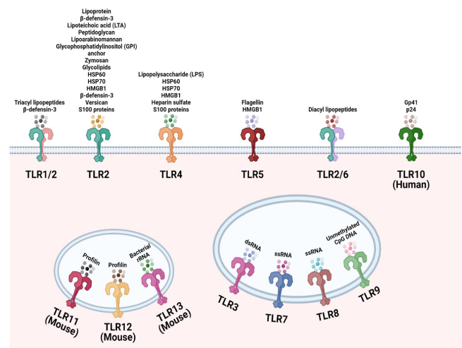
Toll-like receptors (TLRs) act like the superheroes of our immune system, with 10 genes in humans (and 12 in mice), each possessing a unique ability to recognize specific bad-guy moves known as Pathogen-Associated Molecular Patterns (PAMPs). These receptors are versatile, able to identify elements from a variety of troublemakers, making them like superheroes with a broad skill set. Positioned on the outer walls of cells, TLRs primarily guard against extracellular microbial products, acting as vigilant watchers over the fortress.
Structurally, TLRs are transmembrane proteins equipped with an outer region composed of leucine-rich repeats (LRR), functioning like receptors that can spot specific patterns associated with invaders. When a threat is detected, TLRs don’t hesitate to activate a response by forming duos or altering their shape, similar to triggering an alarm system.
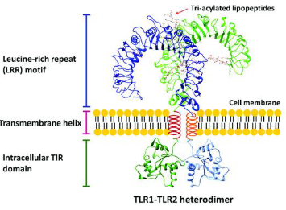
Inside the cell, TLRs wield a Toll-IL-1 receptor (TIR) domain, allowing them to communicate with other signaling molecules – a crucial element for teamwork in the immune system. In essence, TLRs are the special agents patrolling the perimeter, each with its own unique power, ready to activate the immune response when danger is sensed.
2.2.1.1 Cell Surface
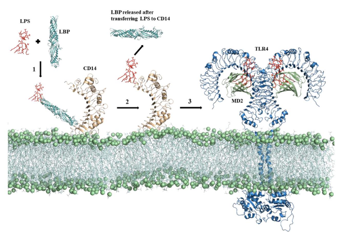
TLRs on the cell surface are like sentinels, each specializing in detecting specific threats. Here are some key players:
TLR-1, 2, 6: Think of these as a trio of guardians. They get activated by certain signals, such as lipoteichoic acid, diacyl, and triacyl lipoproteins commonly found in the outer layers of certain bacteria. TLR-2 can team up with either TLR-1 or TLR-6 to enhance its detective skills.
TLR-4: This one is a key player in dealing with bacterial infections. It’s like the expert detective that recognizes lipopolysaccharide (LPS), a characteristic feature of many Gram-negative bacteria. Interestingly, TLR-4 also has a versatile side – it can identify the Spike protein of the SARS-CoV-2 virus, the culprit behind COVID-19.
Activation Team: TLR-4 doesn’t work alone; it needs backup. For activation, it teams up with accessory proteins called MD-2 and CD14. It’s like having a dynamic trio working together to make sure the response is efficient.
2.2.1.2 Endosomes
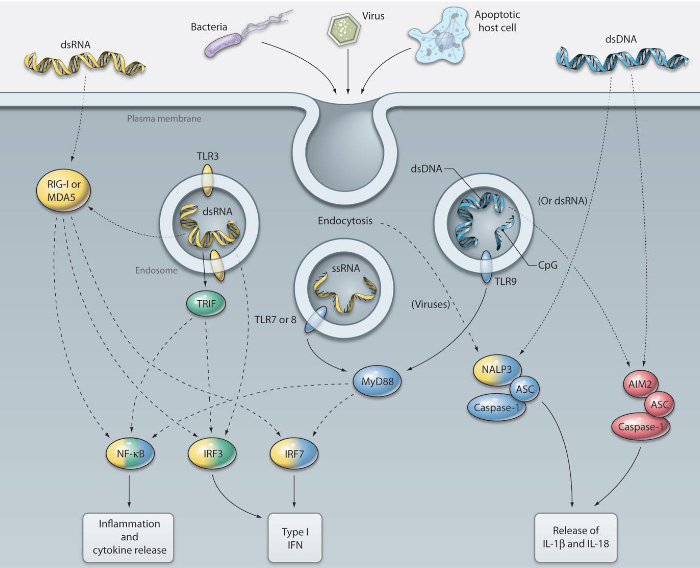
Imagine endosomes as a special compartment within our cells, acting like a high-security zone to detect specific viral threats. Here are the key players:
TLR-3: This detective specializes in recognizing double-stranded RNA (dsRNA), a kind of genetic material that many viruses use during their replication. It’s like TLR-3 is on the lookout for the blueprint of viral mischief. When the cell engulfs viruses or dying cells, TLR-3 encounters dsRNA in the endosome, triggering the alarm.
TLR-7 and 8: These dynamic duo detectives are experts in spotting single-stranded RNA (ssRNA) found in virus genomes, such as those from orthomyxoviruses like influenza. It’s like they have a keen eye for the unique signatures of certain viral intruders.
TLR-9: Picture TLR-9 as the guardian of genetic code. It recognizes unmethylated CpG dinucleotides, which are like specific markers found in the DNA of bacteria and many viruses. TLR-9 acts like a genetic detective, identifying these markers to signal potential trouble.
2.2.2 Nod-Like Receptors
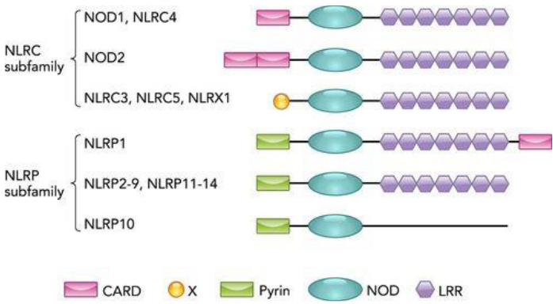
NOD-like receptors (NLRs) are cellular guardians, stationed within the cell’s cytoplasm, acting as vigilant detectors of potential threats. These receptors can be categorized into subfamilies based on the protein domains they carry. All NLRs share a central nucleotide-binding oligomerization domain (NOD), functioning as the core of their surveillance equipment. The NOD subfamily, represented by members like NOD1 and NOD2, includes an additional amino-terminal caspase recruitment domain (CARD), acting as a communication device to coordinate responses when danger is detected.
Another subfamily, NLRP, features members like NLRP3, which replaces the CARD domain with a pyrin domain at their amino termini. This pyrin domain serves a similar communication function, allowing NLRP members to effectively coordinate cellular responses. In essence, NLRs are like an internal security team strategically positioned within our cells, equipped with specific tools such as the NOD domain, and additional domains like CARD or pyrin, to ensure a swift and coordinated response against potential threats.
2.2.2.1 Nod Subfamily
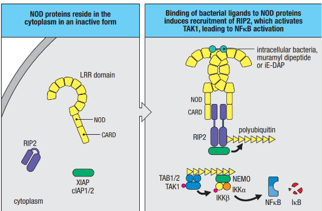
The NOD subfamily, comprising NOD1 and NOD2, acts as a specialized defense team within our cells, tuned to recognize specific signals from bacteria. NOD1 is like a vigilant detector set to pick up on γ-glutamyl diaminopimelic acid (iE-DAP), a substance found in the breakdown of peptidoglycans from both Gram-negative bacteria like Salmonella and some Gram-positive bacteria like Listeria. On the other hand, NOD2 specializes in recognizing muramyl dipeptide (MDP), a component present in the peptidoglycans of most bacteria. These NOD ligands can enter the cell’s cytoplasm through various pathways, including intracellular infection or transportation from materials captured through endocytosis.
NOD proteins play a critical role in cells that are routinely exposed to bacteria, such as epithelial cells forming barriers that bacteria must navigate to establish an infection in the body. When NOD1 or NOD2 detects their respective ligands, a well-coordinated sequence of events unfolds to amplify the immune response. This includes the recruitment of serine-threonine kinase RIP2, which, in turn, associates with E3 ligases (cIAP1, cIAP2, and XIAP) to generate a polyubiquitin scaffold. This scaffold recruits additional players like TAK1 and IKK, leading to the activation of NF-kB, a key regulator of immune responses. The activated pathway also results in the production of nitric oxide (NO), a potent substance that is toxic to bacteria and intracellular parasites.
2.2.2.2 NLRP3
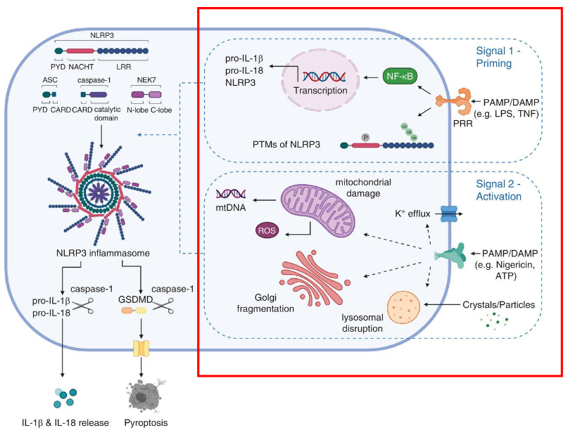
The activation of NLRP3, a crucial component in our body’s defense system, involves a two-step process requiring distinct signals. The first signal, known as priming, is triggered by cytokines or Pathogen-Associated Molecular Patterns (PAMPs). This initial signal leads to the transcriptional upregulation of key components of the NLRP3 inflammasome, including NLRP3 itself, pro-IL-1β, and pro-IL-18. Additionally, post-translational modifications are applied to NLRP3 during priming, essentially preparing and fine-tuning these components for activation.
The second signal, referred to as activation, is provided by either PAMPs or Damage-Associated Molecular Patterns (DAMPs), such as particulates, crystals, potassium efflux, and ATP. These signals induce the full activation of NLRP3 and the formation of the inflammasome. This activation step is crucial for unleashing the full defensive power of the NLRP3 inflammasome, allowing it to effectively respond to potential threats.
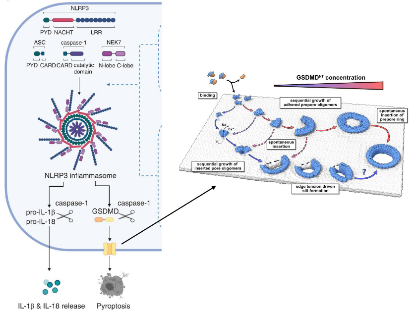
Within the NLRP subfamily, NLRP3 takes center stage as a critical sensor in the immune defense mechanism. This subfamily, comprising NLRP3 (sensor), ASC (adaptor), and Caspase-1 (effector), collaboratively forms the NLRP3 inflammasome complex. This complex acts as a molecular powerhouse that responds to danger signals within the cell.
Upon activation, Caspase-1, a key player in this complex, springs into action. Activated Caspase-1 serves as a molecular scissors, cleaving inactive pro-IL-1β and pro-IL-18 into their active forms. These activated cytokines are then released into the cellular environment, contributing to the inflammatory response.
Furthermore, Caspase-1 showcases its multitasking abilities by also cleaving and activating gasdermin D (GSDMD). The activated GSDMD undergoes a transformative process where its N-terminal domain (GSDMD-NT) oligomerizes, forming pores in the cell membrane. This unique mechanism leads to a form of programmed cell death known as pyroptosis. Pyroptosis is an inflammatory and lytic type of cell death, adding an extra layer to the defense strategy by eliminating infected cells in a way that alerts the immune system.
2.2.3 RIG-I-Like Receptors (i.e., RLRs)
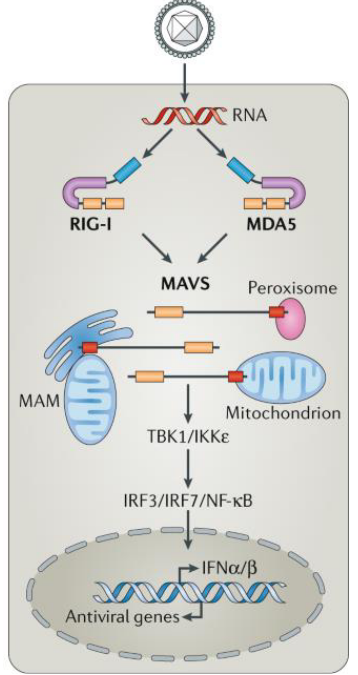
RIG-I-like receptors (RLRs) are like specialized guards within our cells, specifically designed to detect the presence of viruses. Unlike some other detectors, such as TLR-3, 7, and 9, which identify viral RNAs and DNAs outside the cell, RLRs focus on sensing viral RNAs produced within the cells themselves.
One key player in the RLR team is RIG-I, which acts as a discrimination expert between host and viral RNA by detecting differences at the 5’ end of single-stranded RNA transcripts. Most RNA viruses carry unmodified 5’-triphosphate single-stranded RNA, making it a distinctive signature for RIG-I to recognize.
Another member of the RLR team is MDA-5, which has a unique ability to sense double-stranded RNA. Together, RIG-I and MDA-5 act as vigilant guards in the cell’s cytoplasm, detecting viral RNAs and initiating a crucial defense mechanism.
When RIG-I or MDA-5 senses viral RNAs in the cytoplasm, it triggers the production of type I interferons. These interferons play a vital role in the body’s defense against viral infections, serving as signaling molecules that alert neighboring cells to prepare for the impending viral threat.
2.3 Innate Immune Cells
2.3.1 Macrophages
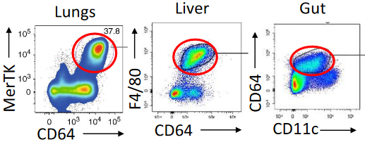
Macrophages play a crucial role in our body’s defense, forming a three-dimensional network within every tissue. These versatile cells are on constant patrol, actively seeking out pathogens and eliminating dead cells. Remarkably long-lived, macrophages originate from fetal liver or yolk sac progenitors during embryonic development and continue to self-renew under normal conditions.
During infections or inflammation, circulating monocytes come to the rescue, replenishing macrophage populations. One of the key tasks of macrophages is phagocytosis, where they engulf and neutralize invading microorganisms. Additionally, macrophages serve as the cleanup crew for the immune system, disposing of pathogens and infected cells targeted by the adaptive immune response, ensuring the removal of debris.
Not only are macrophages skilled at phagocytosis, but they also act as inflammatory mediators by secreting cytokines and chemokines. This secretion induces a state of inflammation in the tissue, attracting other immune cells like monocytes and neutrophils to the site of infection. Furthermore, macrophages facilitate the entry of plasma proteins from the blood into the tissue, contributing to the overall immune response.
2.3.1.1 Phagocytosis
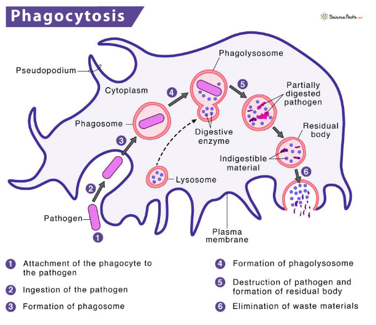
Phagocytosis is a remarkable process by which our immune cells, particularly phagocytes, engulf and neutralize invading microbes. The initiation of phagocytosis occurs when specific receptors on the cell surface interact with the surface of the microbial intruders.
Once the pathogen is recognized, the phagocyte surrounds it with its plasma membrane, creating a protective pocket known as a phagosome. This phagosome then internalizes the bound pathogen, forming a large membrane-enclosed vesicle within the cell.
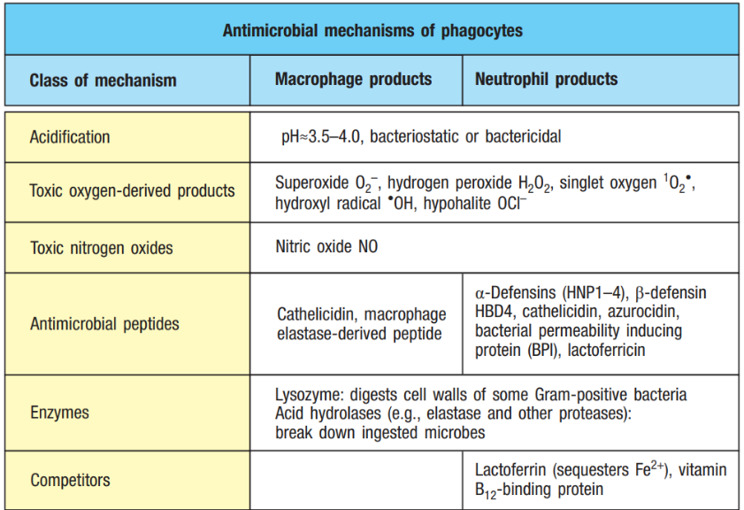
The next step in this cellular defense dance involves the phagosome fusing with lysosomes, resulting in the formation of a phagolysosome. Within the phagolysosome, lysosomal contents are released, creating an environment rich in antimicrobial peptides and enzymes. This fusion process is accompanied by acidification, making the phagolysosome an inhospitable space for the microbe.
To ensure the efficient neutralization of the microbe, enzymatic processes take place within the phagolysosome. These processes produce highly reactive substances such as superoxide and nitric oxide radicals, working together to effectively kill the intruding microorganism.
2.3.2 Neutrophils
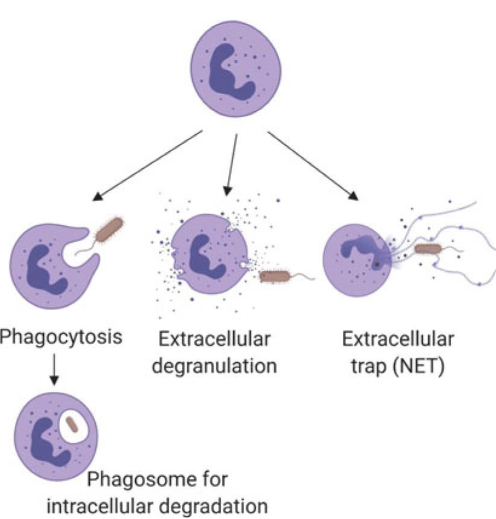
Neutrophils, the most abundant circulating leukocytes in humans, are a crucial part of our immune system. While abundant in the blood, they are not typically found in healthy tissues. These short-lived cells have a lifespan of only a few hours in circulation, necessitating constant replenishment from the bone marrow.
Neutrophils play a significant role in phagocytosis, the process of engulfing and neutralizing invading microbes. After accomplishing a round of phagocytosis and utilizing their primary and secondary granules, neutrophils have a brief existence and die off.
These highly phagocytic cells employ NADPH oxidase (NOX2) to generate reactive oxygen species (ROS) upon activation, contributing to their antimicrobial capabilities. Neutrophils contain various cytoplasmic granules, including primary and secondary granules, which house myeloperoxidase (MPO), hydrolytic enzymes (such as elastase, lysozyme, and matrix metalloproteinases), and other antimicrobial proteins and peptides like lactoferrin and defensins.
In addition to phagocytosis, neutrophils exhibit a unique defense mechanism called NET release. NETs (Neutrophil Extracellular Traps) are structures composed of DNA, histones, and antimicrobial proteins released by neutrophils to trap and neutralize microbes outside the cell.
2.3.2.1 Neutrophil Migration and Chemotaxis
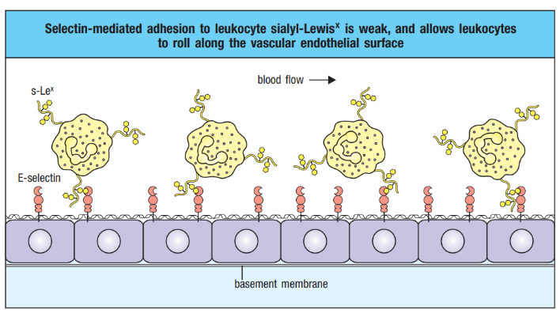
The process of neutrophil migration and chemotaxis involves a well-coordinated dance within the infected tissue. When infection occurs, selectin is induced on the endothelial surface. Neutrophils, the immune system’s rapid responders, engage in a rolling motion along the vascular endothelium, facilitated by selectin-mediated transient interactions.
However, this interaction is relatively weak and cannot firmly anchor neutrophils against the shearing force caused by the flow of blood. Consequently, neutrophils continue to roll along the endothelium, creating a dynamic and continuous cycle of making and breaking contact. This rolling motion is crucial for the efficient recruitment of neutrophils to the site of infection, allowing them to scan and assess the environment for signals that guide them toward the source of the infection.
2.3.2.2 Neutrophil Extracellular Traps (i.e., NETs)
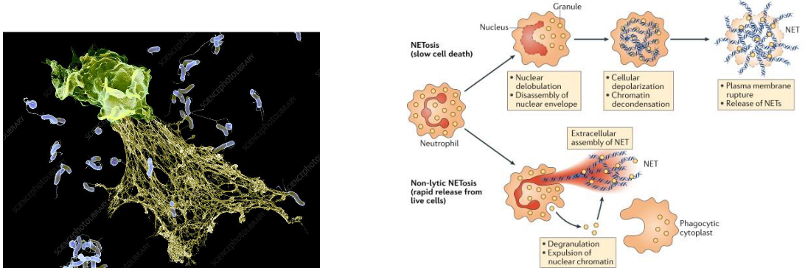
Neutrophil Extracellular Traps (NETs) represent a fascinating and powerful weapon in the immune system’s arsenal. When neutrophils become activated during infection, some undergo a distinctive form of cell death. In this process, the neutrophils release their DNA, along with antimicrobial molecules, into the extracellular space, weaving a fibril matrix known as Neutrophil Extracellular Traps or NETs.
The primary function of NETs is to act as a net-like structure that captures microorganisms. Once ensnared in the NETs, these pathogens can be more efficiently phagocytosed by other immune cells, such as neutrophils or macrophages. Additionally, NETs are enriched with antimicrobial substances, including granule proteins like neutrophil elastase, myeloperoxidase (MPO), and S100 proteins, enhancing their ability to neutralize and eliminate pathogens.
The formation of NETs is a specialized process called NETosis, and it represents a unique strategy employed by neutrophils to contribute to the immune response. NETosis allows neutrophils to sacrifice themselves for the greater good, creating a physical barrier and releasing antimicrobial weapons to immobilize and combat invading microorganisms.
2.3.3 Dendritic Cells
Dendritic cells (DCs) are a diverse group, featuring two primary functional types: conventional dendritic cells (cDCs) and plasmacytoid dendritic cells (pDCs). These cells originate from progenitors within the bone marrow and journey through the bloodstream to various tissues throughout the body, as well as to peripheral lymphoid organs.
The primary role of dendritic cells is as antigen-presenting cells (APCs). They play a pivotal role in processing microbes they ingest, generating peptide antigens capable of activating T cells and initiating adaptive immune responses. Furthermore, dendritic cells respond to microbial recognition by producing cytokines, which serve to activate or polarize other cell types involved in the immune response.
Dendritic cells serve as essential bridges between innate and adaptive immunity, orchestrating communication and cooperation between different components of the immune system.
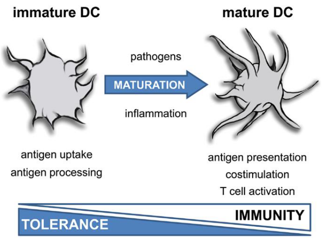
In a steady state, dendritic cells (DCs) remain in an immature state, poised as vigilant sentinels of the immune system. They are tasked with recognizing a diverse array of danger signals emanating from invading pathogens and tissues through Pattern Recognition Receptors (PRRs).
Despite their crucial role in immune surveillance, immature dendritic cells exhibit low surface expression of major histocompatibility complex (MHC) class II molecules and co-stimulatory molecules such as CD80 and CD86. These molecules are vital for activating T cells and orchestrating effective immune responses. However, in their immature state, dendritic cells maintain a poised readiness, awaiting signals that trigger their maturation and enable them to initiate adaptive immune responses when needed.
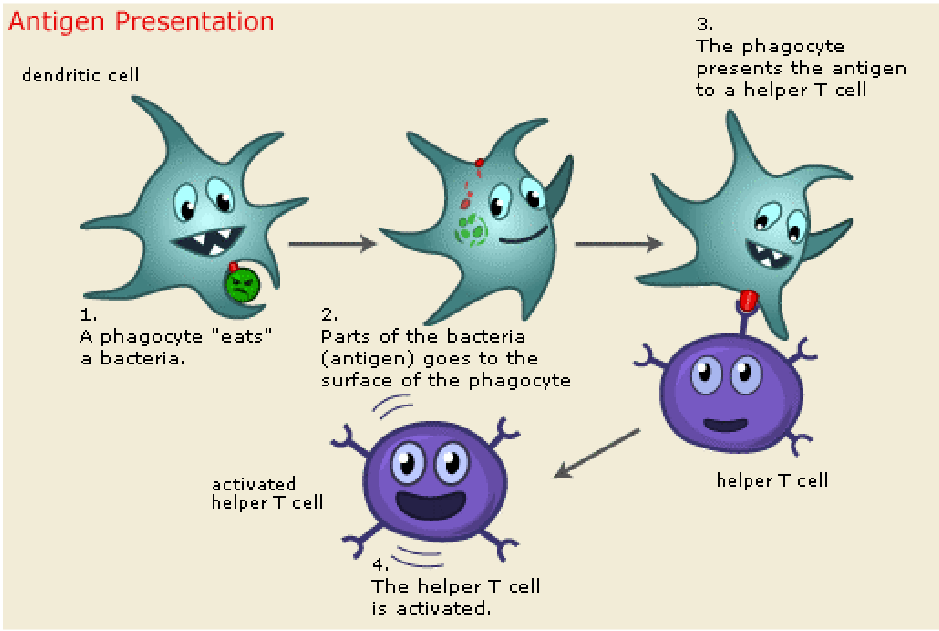
DCs undergo maturation in response to infection. This process involves the upregulation of MHC class II and co-stimulatory molecules, enhancing their capacity to present antigens to T cells. Additionally, mature DCs rely on CCR7-dependent migration to T-cell-rich zones within lymph nodes, where they efficiently present antigens to T cells.
Moreover, mature DCs release cytokines that play a crucial role in promoting the differentiation of naïve antigen-specific T cells into effector cells. This coordinated response ensures the activation of adaptive immunity and the initiation of an effective immune response against invading pathogens.
2.3.4 MHC Complexes
MHC complexes play a pivotal role in immune surveillance and response. Dendritic cells (DCs), acting as tissue sentinels, continuously sample antigens from their local environment. They process these antigens for presentation to CD4+ T helper cells or CD8+ T cells on MHC class II or MHC I molecules, respectively.
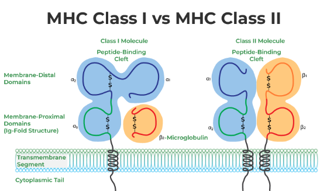
MHC class I and II molecules function by presenting peptides on the cell surface, where they can be recognized by T cells. Immunogenic peptides bound to MHC class I complexes are recognized by cytotoxic CD8 T cells, while those bound to MHC class II complexes are recognized by CD4 T cells.
MHC class I molecules primarily present peptides derived from cytosolic proteolysis, providing a window into the intracellular environment. In contrast, MHC class II molecules predominantly sample the extracellular milieu by presenting antigens captured and processed within endolysosomal compartments. This distinction in antigen presentation enables the immune system to effectively surveil both intracellular and extracellular threats, contributing to the overall robustness of the immune response.
2.3.4.1 Antigen Presentation on MHC II Proteins
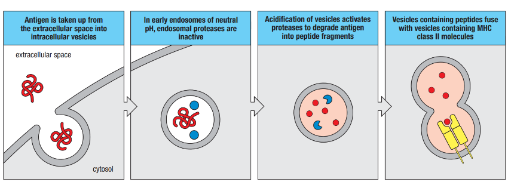
Antigen presentation on MHC II molecules is a crucial step in the immune response against extracellular pathogens. The process begins when extracellular pathogens and proteins are internalized into endocytic vesicles within the cell.
Once inside the endocytic vesicles, these pathogens are degraded by activated intravesicular proteases, resulting in the generation of peptide fragments. These peptide fragments possess the capability to bind to MHC II molecules.
MHC II molecules are initially synthesized and delivered to the endoplasmic reticulum (ER) membrane. From there, they are transported onward as part of membrane-enclosed vesicles that bud off the ER. These vesicles are directed to intracellular vesicles containing internalized antigens.
Within these intracellular vesicles, complexes are formed between the peptide fragments and MHC II molecules. These complexes are then transported to the cell surface, where they are presented to CD4 T cells.
2.3.4.2 Antigen Presentation on MHC I Proteins
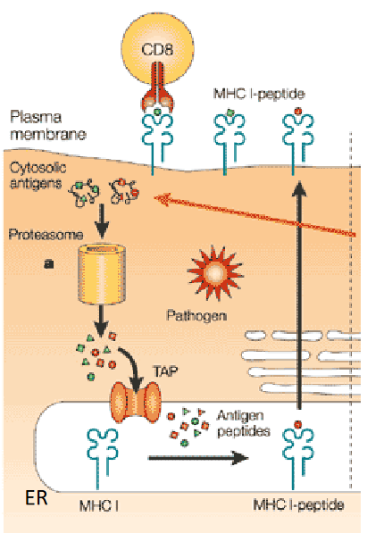
Antigen presentation on MHC I molecules offers a distinct pathway through which dendritic cells (DCs) handle antigens, particularly in response to viral infections. This process involves the direct entry of antigens into the cytosol of DCs, typically facilitated by viral infections.
Once inside the cytoplasm of DCs, viral proteins are synthesized, processed, and broken down in the proteasome. Subsequently, these peptides are presented on the cell surface as antigenic fragments loaded onto MHC I molecules. This loading process occurs after the peptides are transported into the endoplasmic reticulum (ER).
To achieve this, cytosolic peptides must traverse the ER membrane, facilitated by a transporter known as the MHC-encoded Transporter Associated with Antigen Processing (TAP) complex. The TAP complex is responsible for translocating cytosolic peptides across the ER membrane, allowing them to reach the ER lumen where the peptide-binding portion of MHC-I molecules is located.
This mechanism enables dendritic cells to efficiently present antigens to and activate naïve CD8 T cells. Subsequently, these activated CD8 T cells differentiate into cytotoxic effector CD8 T cells, which play a crucial role in recognizing and eliminating virus-infected cells.
2.3.4.2.1 Cross Presentation
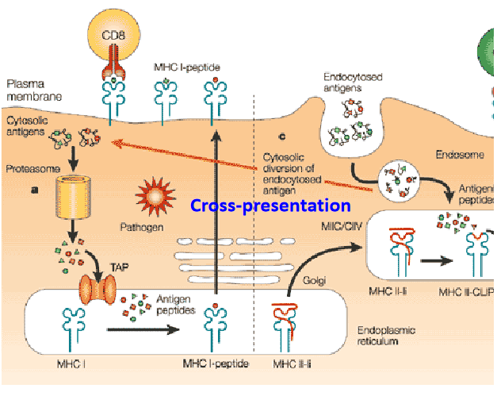
Antigen presentation on MHC I molecules also involves a process known as cross-presentation, which is essential for the immune system’s ability to respond effectively to viral infections and other threats. This mechanism enables dendritic cells (DCs) to present antigens derived from extracellular sources on MHC I molecules, thereby activating CD8 T cells.
Cross-presentation occurs when DCs internalize extracellular virus particles or virus-infected cells through processes like micropinocytosis or phagocytosis. Once these materials enter the endocytic pathway, viruses can be processed for presentation on MHC I molecules.
In some cases, viruses taken up by DCs via endocytic or phagocytic vesicles are transported to the cytosol, where they undergo proteasomal degradation. Subsequently, viral peptides are transferred to the endoplasmic reticulum (ER) for loading onto MHC I molecules. This process allows DCs to effectively present viral antigens to CD8 T cells, initiating an immune response against the infection.
Importantly, viruses that do not directly infect DCs can still stimulate the activation of CD8 T cells through cross-presentation.
2.3.5 Cytokines and Chemokines
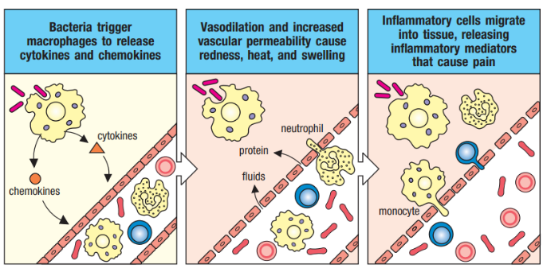
Cytokines and chemokines are vital signaling molecules released by cells, often in response to various stimuli triggering immune responses. Similar to hormones, they convey critical signals to other immune cells, playing pivotal roles in amplifying and regulating immune responses.
These small proteins exert their effects by binding to specific receptors on target cells, orchestrating various immune responses. Cytokines can act in different ways: in an autocrine manner, affecting the behavior of the cell that releases them; in a paracrine manner, influencing nearby cells; or even in an endocrine manner, where they are stable enough to act on distant cells.
Chemokines, a subtype of cytokines, function as chemoattractant molecules. They induce directed chemotaxis in nearby responsive cells, guiding the movement of cells toward the source of the chemokine. This directed movement plays a crucial role in processes such as inflammation and immune cell recruitment to sites of infection or tissue damage.
2.4 Trained Memory
The Bacillus Calmette-Guérin (BCG) vaccine, derived from an attenuated strain of Mycobacterium bovis, was developed in the 1920s to provide protection against tuberculosis, a widespread and deadly infectious disease at the time.
Remarkably, epidemiological studies conducted shortly after its introduction revealed a fascinating phenomenon: the BCG vaccine seemed to reduce infant mortality rates even beyond its anticipated protection against tuberculosis. In fact, children vaccinated with BCG exhibited a significant 50% reduction in overall mortality, a profound effect that could not be solely attributed to its tuberculosis-preventing properties.
Further investigations suggested that the mortality reduction observed in BCG-vaccinated infants might stem from the induction of immunity against unrelated infectious agents. Surprisingly, BCG appeared to confer protection against a spectrum of pathogens beyond tuberculosis. Studies demonstrated its efficacy in protecting against various viral infections, including vaccinia virus, herpes simplex virus type 2, and influenza A virus.
This unexpected discovery of the broader protective effects of the BCG vaccine against diverse infectious agents paved the way for the concept of “trained immunity.” Trained immunity refers to the phenomenon wherein exposure to certain stimuli, such as the BCG vaccine, enhances the innate immune system’s ability to respond to subsequent infections, even those unrelated to the initial stimulus.
2.4.1 What is Innate Immune Memory?
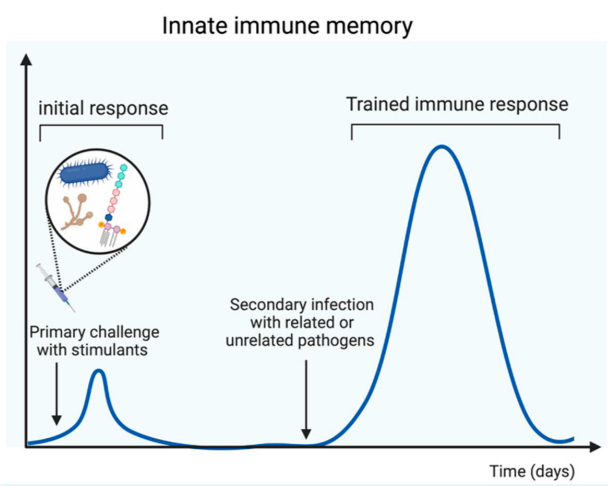
Innate immune memory, also known as trained immunity, denotes a remarkable feature of the innate immune system wherein innate immune cells exhibit heightened responsiveness upon encountering microbial pathogens for a second time. This enhanced response includes increased production of inflammatory mediators and an augmented capacity to eliminate infections.
This functional adaptation of the innate immune system serves as a crucial defense mechanism against secondary infections. Importantly, innate immune memory provides protection not only against the same pathogen encountered previously but also against heterologous pathogens. This non-specific protection underscores the innate immune system’s ability to mount effective responses against a variety of microbial threats, contributing significantly to the body’s defense against infections.
2.4.2 More on Trained Immunity
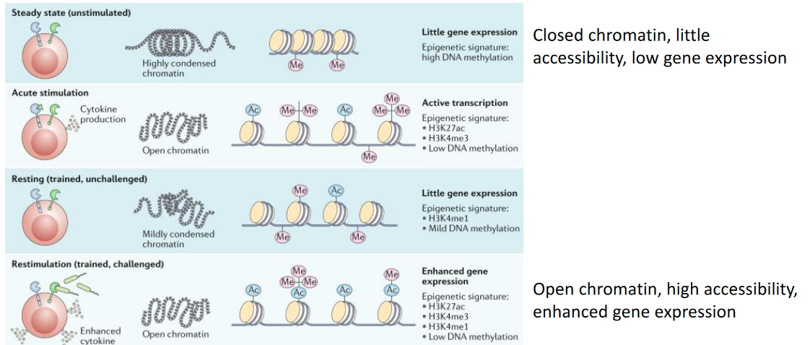
The concept of long-term epigenetic reprogramming in innate immune cells underscores a fundamental aspect of their function. This process involves sustained alterations in transcriptional programs without permanent changes to the genetic code. Specifically, innate immune cells undergo modifications in histones, proteins that help package DNA into chromatin, resulting in long-term opening of chromatin at the promoters of genes encoding pro-inflammatory cytokines like IL-6, IL-1β, and TNF.
Through these epigenetic changes, innate immune cells establish a molecular memory of previous encounters with pathogens or immune stimuli. This memory enables them to respond more effectively upon subsequent exposures, initiating a rapid and robust inflammatory response against invading pathogens.
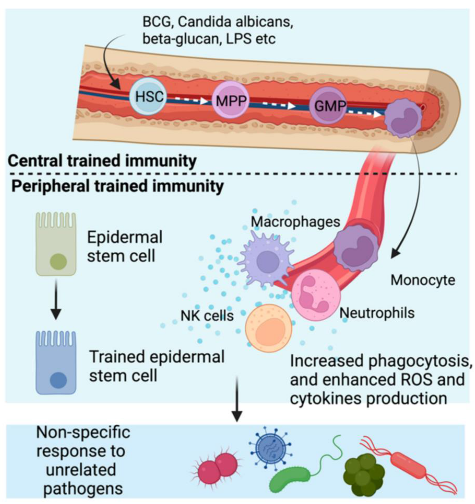
Studies have identified trained monocytes circulating in the bloodstreams of individuals vaccinated with BCG for at least 3 months post-vaccination. However, innate immune cells, despite their central role in this process, are short-lived and are unlikely to transmit the memory phenotype to their progeny to sustain long-term protection.
Interestingly, the phenomenon of trained immunity occurs through dual mechanisms: within hematopoietic stem cells (HSCs) in the bone marrow, known as central trained immunity, and within differentiated immune cells in peripheral tissues, referred to as peripheral trained immunity. HSCs, characterized by their longevity and self-renewal capabilities, reside within the bone marrow. The training of HSCs enables pro-inflammatory epigenetic reprogramming, which can be passed down to their daughter cells. As these daughter cells differentiate into trained effector innate immune cells, they inherit the primed state, facilitating a heightened immune response upon encountering subsequent infections.